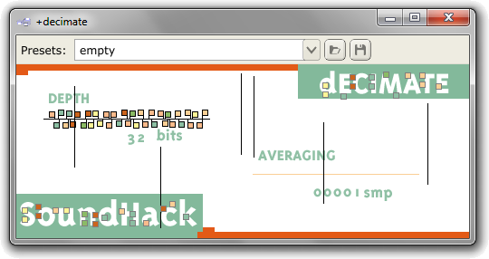

Plugin Presets
The Pedalboard has a unique way of handling plugin presets. As well as letting users switch between the factory presets which came with the plugin, the Pedalboard lets you save your own presets and have them appear automatically in a plugin's preset list. The app will keep track of all user presets and let you delete, copy, rename or export them.
The Preset Toolbar

The preset toolbard appears at the top of every plugin's editor window. As can be seen in the image above, there are three controls in every plugin's preset toolbar. From left to right:
Presets ComboBox
This Displays the current preset and lets you switch to a new one. If you have saved any user presets, these will be listed at the end of the drop-down list, after the plugin's factory presets.
Import Preset Button

This lets you import a preset from a .fxp file. The imported preset will replace the current preset's settings. Note that importing a preset with this button will not automatically add it to the Pedalboard's list of user presets for this plugin. To add an imported preset to the list of user presets, you can either use the Save Preset Button once the file has been imported, or import it directly to the list via the User Preset Management window.
Save Preset Button
This saves the current plugin settings as a user preset, which may then be accessed via the Presets combobox in the same way as the plugin's factory presets. Once a user preset has been saved, it will then be accessible to any instance of that plugin in the future.
User Preset Management
The list of plugin user presets stored by the app can be managed via the User Preset Management window. It can be accessed via Edit->User Preset Management.
The User Preset Management window lists all the user presets the Pedalboard is aware of, and provides options to rename, copy, delete, and import and export them. Any changes made here will then show up in the affected plugin's list of presets.
Rename, Copy and Remove are fairly self-explanatory. Note that Remove will delete the preset from the system, after which it cannot be retrieved.
The Import button will import a preset into the list of user presets from a .fxp file. This is a two-step process; before selecting the .fxp file to import, you must first select which plugin the preset applies to.
The Export button will export the selected preset as a .fxp file, which may be used in other hosts.
Preset Files
All user presets are stored as .fxp files within the presets subdirectory of the Pedalboard's user data directory. See the Pedalboard Files page for more details.